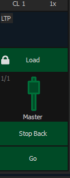

Fader and Button Configuration
Click or tap on the virtual buttons or fader to see a list of available configuration options.

Button Options
The following options are available for playback buttons:
- Go - executes the cue currently in the pending file of the associated fader.
- Stop Back - instantly stops all fader activity. Pressing twice will fade to the previous cue on that fader.
- Assert - can be used to re-run the active cue on that fader, to regain control of all cue contents, to apply a newly set higher priority state to the associated fader, or make any changes in blind to an active cue on stage. This option is not available on Element 2.
- Group Select - selects the channels stored in the cue.
- Freeze - halts all effect activity on the fader. Press Freeze again to resume effect activity.
- Off - removes the content and if the fader is set to Master, the fader will remain where it currently is.
- Release - removes the content and if the fader is set to Master, the fader will reset to 0.
- Start Stop Effect - starts the effects while ignoring dwell times. Will stop effects if any are running.
- Button Disabled - no action is assigned to the button.
- Solo - plays back the content and suppresses any intensity values not provided by the associated content while the solo button is held down. When the button is released, intensity values are restored. Priority and HTP are ignored. Shielded, park and pixel mapping outputs are not affected by the solo button. This is unrelated to Solo Mode.
- Back - fades to the previous cue.
Fader Options
The following options are available for a playback fader:
- Master - fader will be a proportional master, a manual master, or an intensity master, depending on the cue list property.
- Effect Rate - fader centers to home. It controls the rate of any running effects (same behavior as using rate via the Effect Status Display). The adjusted setting from this control cannot be stored.
- Effect Size - similar to Effect Rate but for effect size.
- Rate Master - homes to center. It adjusts the cue rate, just like rate and load.
- Down Fade - same as the default behavior of the master option.
- Fader Disabled - no action is assigned to the fader.
- Master Only - fader is used to set a level for content to fade to. The slider can be used to live adjust levels when the fader has been activated via the bump button. See Master Only for more information.
- Effect Master - masters the entry/exit mode of the effects (size, rate or both).
- Levels Only - masters the levels without mastering the effect.